１３ リマインドメール送信設定
１．来院リマインド：予約があり、まだ来院のない患者に一括してメールを送信する機能です
（１）管理メニューから「来院リマインド」を選択します。
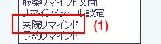
（２）来院リマインド設定画面が表示されます。
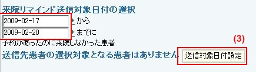
（３）対象日付を設定して「送信対象日付設定」ボタンを押すと、期間中に予約があり、まだ来院のない患者が表示されます。日付は未来日でも構いません。
（４）リストの患者から、送信する患者にはチェックを残し、送信しない患者からはチェックを外して「メール」ボタンを押します。
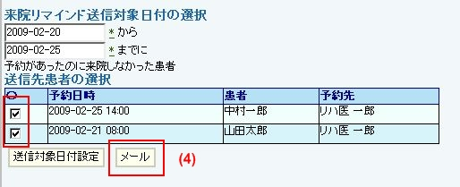
（５）確定送信先リストと、メールの表題、文面が表示されます。
（６）問題なければ、そのまま送信ボタンを押します。
（７）文面を変更する場合「文面編集」ボタンを押します。
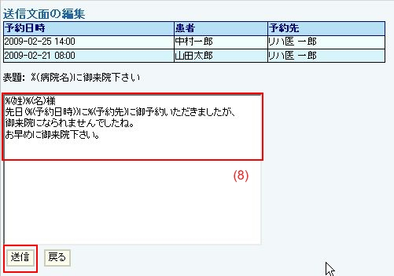
（８）編集画面になりますので、文面を修正し「送信」ボタンを押します。
（９）送信確認画面が表示されます。
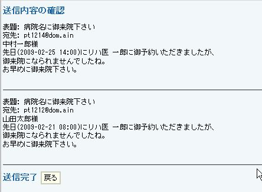
２．予約リマインド：予約のある患者に一括してメールを送信する機能です
（１）管理メニューから「予約リマインド」を選択します。
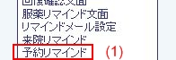
（２）予約リマインド画面が表示されます。
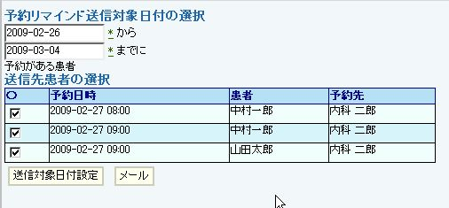
（３）来院リマインドに倣って送信します。
３．来院リマインド文面：来院リマインド機能の文面を設定します。
（１）管理メニューから「来院リマインド文面」を選択します。
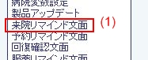
（２）来院リマインド文面設定画面が表示されます。
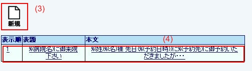
（３）新たに作る場合、新規を選択します。
（４）既存のものを編集する場合、編集対象を選択します。
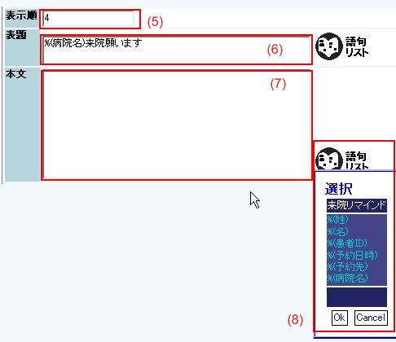
（５）表示順を設定します。これは、来院リマインド機能での表示順の設定です。
（６）表題を設定します。メールの表題として送信されます。
（７）本文を設定します。メールの本文として送信されます。
（８）表題、本文とも、語句リストから選択することも可能です。
（９）編集完了ボタンで登録されます。
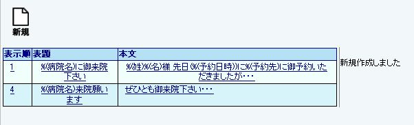